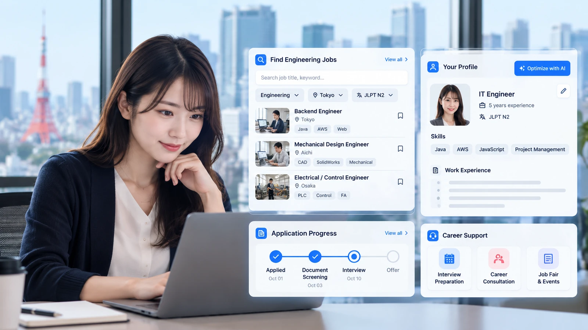
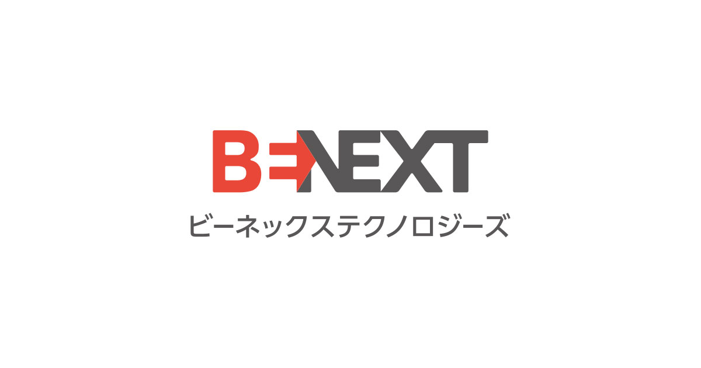

01
Đa dạng Job Kỹ sư tại Nhật
Hàng ngàn vị trí tuyển dụng được cập nhật mỗi ngày, thuộc các ngành Cơ khí, IT, Điện, Điện tử, Xây dựng tại các doanh nghiệp uy tín Nhật Bản.
Ứng viên JobShare
Nền tảng tuyển dụng thông minh cho người nước ngoài tại Nhật
Hàng ngàn vị trí tuyển dụng được cập nhật mỗi ngày, thuộc các ngành Cơ khí, IT, Điện, Điện tử, Xây dựng tại các doanh nghiệp uy tín Nhật Bản.
Tự động hóa việc viết CV chuẩn chuyên nghiệp, tối ưu từ khóa theo yêu cầu tuyển dụng Nhật Bản.
Hệ thống tự động phân tích hồ sơ để đề xuất các công việc có độ "matching" cao nhất với năng lực của bạn.
Lợi thế khi tìm việc cùng JobShare: gợi ý đúng vị trí, quy trình rõ ràng và đội ngũ chuyên viên đồng hành đến khi nhận việc.
Danh sách việc làm được chọn lọc theo kỹ năng, kinh nghiệm và mục tiêu nghề nghiệp, giúp bạn tiết kiệm thời gian tìm kiếm và tăng cơ hội ứng tuyển đúng vị trí.
Bạn được hướng dẫn cải thiện hồ sơ theo tiêu chí doanh nghiệp Nhật, luyện phản hồi phỏng vấn và nhận góp ý cụ thể để tăng tỉ lệ đậu.
Mọi trạng thái ứng tuyển được cập nhật rõ ràng theo từng vòng. Đội ngũ JobShare luôn theo sát để hỗ trợ bạn xử lý nhanh các phát sinh.
Nhiều vị trí kỹ sư thuộc các lĩnh vực IT, Cơ khí, Điện – Điện tử, Sản xuất, Xây dựng... được cập nhật thường xuyên từ các doanh nghiệp Nhật. Bạn có thể chủ động tìm kiếm và lựa chọn công việc phù hợp với kinh nghiệm, kỹ năng và định hướng nghề nghiệp của mình.
Từ trang chủ, bạn có thể nhanh chóng xem các vị trí đang tuyển và lọc theo nhu cầu của mình để bắt đầu ứng tuyển.
Hoàn thiện hồ sơ ứng viên, xác nhận thông tin cần thiết và gửi ứng tuyển chỉ trong vài bước đơn giản.
Sau khi gửi hồ sơ, hệ thống sẽ đánh giá và cập nhật trạng thái để chuyên viên JobShare liên hệ hỗ trợ tiếp theo.

Hệ sinh thái doanh nghiệp đang đồng hành cùng JobShare




Việc làm trên JobShare. Khám phá tất cả
Cập nhật nhanh thông tin, mẹo tìm việc và xu hướng việc làm Nhật Bản.
Xem tất cả tin tức →Đăng ký ngay hôm nay để tạo hồ sơ ứng viên JobShare và khám phá hàng trăm cơ hội việc làm tại Nhật Bản. Hoàn toàn miễn phí!
Có thể chuyển sang tư vấn trực tiếp với đội ngũ
Xin chào bạn! Chọn một trong các câu hỏi gợi ý bên dưới để xem trả lời. Muốn trò chuyện trực tiếp với admin, hãy mở tab «Chat với admin».
Nhập tên (tuỳ chọn) và tin nhắn đầu tiên — tư vấn viên JobShare sẽ phản hồi.
Không thể kết nối hỗ trợ lúc này. Vui lòng thử lại.